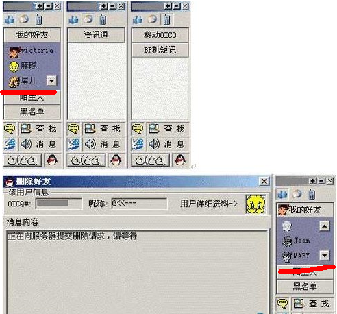

为什么新版手机QQ会遭遇如此多的质疑？
- 日期：2013-05-15
- 阅读：5200次
事件回顾：苹果商店里最新上架的手机QQ2013 4.0版，遭遇上架以来网友最大的吐槽，上架至今仅仅4天38000多网友对该版本进行了评论，其中90%以上给了“差评”，也就是一颗星评价，评论中统一骂声一片，网友戏称手机QQ已经成为“二手微信”。
针对 QQ 手机版 4.0 更新后的变化招来用户大量不满反馈，手机QQ在微博中表示：“QQ 全新手机版上线后，很多用户反馈了宝贵的意见。对此，QQ 团队十分重视，预计在两周内完成优化的开发。优化后的版本将会在兼容在线状态的基础上改进联系人列表，方便沟通和使用。同时，还会在安卓版提供便捷的退出键。上线的具体时间，官方微博将第一时间公布。” 用了QQ2013一段时间了，感觉虽然没什么亮点，但是也不至于渣到1颗星的地步；但是用户永远是对的，所以我们还是要分析一下用户评价如此之低的原因。浏览了一下App Store上的评论，除去泛泛而谈的批评外，基本上对2013的不满都指向一点：取消了用户在线状态。对于腾讯这样的企业，产品设计不会是拍脑袋想出来的，这种改变应该是有数据支撑的。可能有数据证明大部分或者绝大部分用户已经在事实上24小时在线了：不是在pc端就是在移动端。如果真如此，那么这个改动倒也谈不上错误，甚至是一个好的尝试。 但是市场却不领情，反应十分剧烈。这体现了了产品设计中一个常见的问题：挑战用户使用习惯是一件风险非常大的事情。下图可以清晰的看出，早在OICQ时代，已经有明确的在线/离线概念了
而腾讯是在2001年将OICQ改名为QQ的，也就是说，腾讯至少花了13年培养用户对在线状态的使用习惯。可以说，在线状态之于QQ，不亚于开始菜单之于windows，而win8取消开始菜单对用户带来的不适应已经是个很好的注脚说明了。 在这一点上，移动qq不能够完全用微信做标准。微信没有在线状态，很大一个原因是，微信从来就没有过在线状态，用户已经习惯了这个设定：微信用户没有在线不在线的问题，没人说话时就不在线，有人说话时就立即在线。在产品设计中有一个原则是：不要轻易挑战用户习惯，哪怕这个习惯是错的，除非你有十足的把握。现在看来，移动qq团队已经犯了这个错误，而且似乎他们还要犯第二个错误：对于已经做出的改变，不要轻易放弃，否则那些接受了改变的用户也要起来反对你。有消息称，移动QQ团队正在研究用户反馈，可能会在下个版本中做出调整。如果移动QQ团队在下个版本中又恢复了在线状态，至少是恢复到2012版本的状态，那么将是灾难中的灾难：在两个版本的间歇期，一部分用户已经习惯了你的改变，现在又要变回去，他们也要发出不满。于是在产品团队眼中就发现自己的状况是进退维谷：怎么改都要挨骂。对于产品团队来说，挨骂很正常。因为觉得你好的用户基本不会表扬你，跳出来说你的用户一定是觉得你不好的，所以用户反馈一般都是负面的。
因此，对于产品团队而言：第一不要轻易改变，第二如果要改变先做试验，第三一旦决定改变了就不要轻易放弃。测试cscscscscscscscscscscscs
ksksajfkdsjfkljgqioerutyopqrejhoqjhdfjghodujeorjyoprejmlgdkjksksajfkdsjfkljgqioerutyopqrejhoqjhdfjghodujeorjyoprejmlgdkjksksajfkdsjfkljgqioerutyopqrejhoqjhdfjghodujeorjyoprejmlgdkjksksajfkdsjfkljgqioerutyopqrejhoqjhdfjghodujeorjyoprejmlgdkjksksajfkdsjfkljgqioerutyopqrejhoqjhdfjghodujeorjyoprejmlgdkjksksajfkdsjfkljgqioerutyopqrejhoqjhdfjghodujeorjyoprejmlgdkjksksajfkdsjfkljgqioerutyopqrejhoqjhdfjghodujeorjyoprejmlgdkjksksajfkdsjfkljgqioerutyopqrejhoqjhdfjghodujeorjyoprejmlgdkjksksajfkdsjfkljgqioerutyopqrejhoqjhdfjghodujeorjyoprejmlgdkj
ksksajfkdsjfkljgqioerutyopqrejhoqjhdfjghodujeorjyoprejmlgdkjksksajfkdsjfkljgqioerutyopqrejhoqjhdfjghodujeorjyoprejmlgdkjksksajfkdsjfkljgqioerutyopqrejhoqjhdfjghodujeorjyoprejmlgdkjksksajfkdsjfkljgqioerutyopqrejhoqjhdfjghodujeorjyoprejmlgdkjksksajfkdsjfkljgqioerutyopqrejhoqjhdfjghodujeorjyoprejmlgdkjksksajfkdsjfkljgqioerutyopqrejhoqjhdfjghodujeorjyoprejmlgdkjksksajfkdsjfkljgqioerutyopqrejhoqjhdfjghodujeorjyoprejmlgdkjksksajfkdsjfkljgqioerutyopqrejhoqjhdfjghodujeorjyoprejmlgdkjksksajfkdsjfkljgqioerutyopqrejhoqjhdfjghodujeorjyoprejmlgdkj